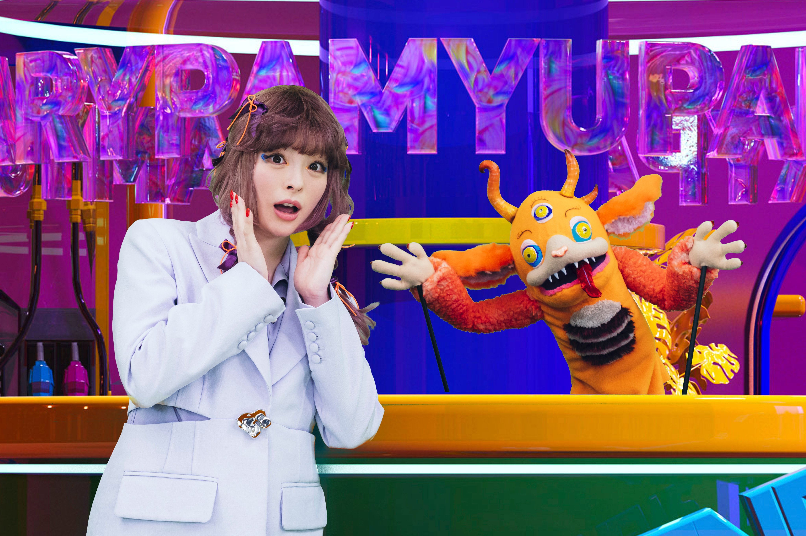

Un groupe japonais au physique avantageux, une pincée de chansons survitaminées, des chorégraphies bien ficelées, des fans déchaînés et une bonne dose de marketing, telle est la recette de la J-pop. Ce style de musique commerciale est un véritable phénomène dans l’archipel, si bien qu’il domine le marché. Fruit de l’industrie marketing, la pop japonaise est omniprésente dans les médias, portée par les japanimes, les jeux vidéo et le karaoké. Apparue en 1988 au pays du soleil levant, la J-pop tout comme sa cousine coréenne la K-pop, est issue de la musique traditionnelle locale à laquelle s’ajoutent des tendances occidentales. Ce style de musique fait partie des 4 genres musicaux actuels au Japon, au même titre que la J-rock, la J-rap et le enka. L’expression J-pop pour Japanese popular music, a été lancée par la station de radio J-Wave, afin de désigner la musique locale influencée par la mode occidentale. Le genre s’inspire des tendances rock’n roll, disco, dance, électro, soul, hip-hop et RnB. Avec des textes en japonais, destinés aux adolescents, la J-pop surfe sur les grands courants américains ou européens. Ainsi, on distingue des styles musicaux variés allant du survolté aux mélodies plus classiques. Héritée de la musique japonaise populaire du 19e siècle et influencée par les sons occidentaux, la J-pop est le résultat d’une évolution historique et culturelle. A l’ère Meiji, le premier courant de musique populaire est le genre enka, qui désigne les chanteurs de rue. Ces artistes étaient accompagnés d’instruments traditionnels japonais. Plus tard, avec l’apparition de la radio, les chansons occidentales émergent sur l’archipel. Nous sommes dans les années 20 et le Jazz a le vent en poupe au Japon. En parallèle, les classiques européens passent de plus en plus sur les ondes. Au fur et à mesure, certains titres populaires à l’étranger sont repris par les Japonais dans leur langue natale. C’est la naissance du genre kayokyoku. Les musiques traditionnelles du enka se parent de sonorités occidentales.
En parallèle, les agences artistiques apparaissent et sont à l’affût de nouveaux talents. Ce sont elles qui fabriquent de toute pièce « les idoles » et les codes marketing pour garantir le succès de leurs carrières. Elles assurent le repérage, l’audition et la formation intensive des futures stars. Parmi les pionnières, l’agence Johny and Associates, spécialisée dans le recrutement d’artistes masculins. Peu à peu, les fades copies des vedettes étrangères sont remplacées par des stars locales donnant naissance aux premiers boys band japonais des années 70. Les mélodies sont conçues par des auteurs-compositeurs de renom et les paroles sont toujours chantées en japonais dans un souci de proximité avec le public. Les années 80, quant à elles sont marquées par des figures féminines. Pendant toute une décennie, les idoles aux airs de jeunes filles modèles révolutionnent la J-pop au Pays du Soleil levant. Le phénomène s’essouffle dans les années 90 lorsque l’économie du Japon est au plus haut pour ensuite revenir quelques années plus tard avec la crise financière. Sous l’emprise de la nostalgie, les Japonais repensent aux idoles de leur adolescence. C’est ainsi que le groupe Morning Musume relance l’engouement pour les starlettes dans les années 2000. On peut mentionner le célèbre producteur Yashuki Akimoto, à l’origine des groupes géants féminins. Sous l’influence de la crise, les maisons de disques revoient leur stratégie marketing en proposant aux médias des prestations gratuites en échange de visibilité. Ainsi, les idoles apparaissent partout à la télévision et sur les publicités. Les stars de cette époque se distinguent par des influences urbaines, en phase avec les enfants de la crise. La chanteuse Namie Amuro incarne parfaitement cette rupture et donne un nouvel élan aux idoles de 2e génération.